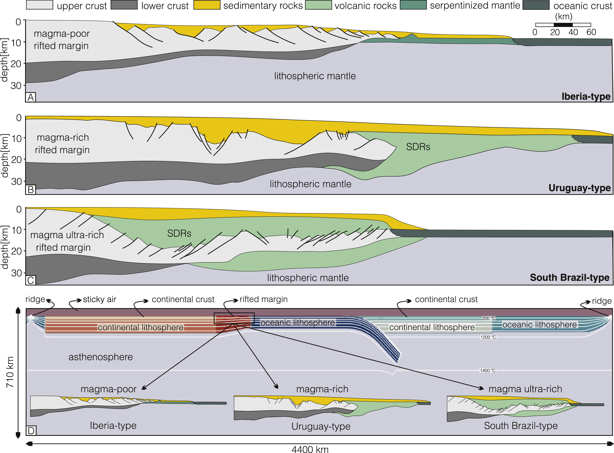

Exhumation of ultra-high pressure (UHP) rocks modulated by rifted margin-subduction feedback: Implications for their preservation in old collisional orogens

Resumo em Português
Na subducção continental, margens rifteadas podem ser transportadas a profundidades mantélicas superiores a 90 km, onde o metamorfismo de ultra-alta pressão (UAP) acima da estabilidade do coesite é atingido. Embora diferentes mecanismos de exumação para rochas UAP tenham sido discutidos, nenhum deles integra a compreensão recente sobre margens continentais rifteadas. Neste trabalho, realizamos experimentos numéricos termomecânicos de alta resolução para demonstrar que segmentos de margens rifteadas pobres em magma que atingem condições UAP podem ser exumados eficientemente de volta a níveis mais rasos, enquanto segmentos de margens rifteadas ricas em magma não podem. Isso ocorre porque a espessa camada de rochas com composição basáltica nas margens ricas em magma torna-se negativamente flutuante durante o metamorfismo, impedindo sua exumação. Esse novo conceito pode ser fundamental para explicar por que rochas UAP exumadas — uma característica-chave dos orógenos continentais de estilo moderno — apenas surgiram e tornaram-se comuns mais tardiamente na história da Terra. Sugere-se que temperaturas potenciais do manto mais elevadas e maior fertilidade no início da história terrestre favoreceram margens rifteadas ricas em magma, tornando a exumação da crosta UAP ineficiente. As condições para margens rifteadas pobres em magma podem ter surgido durante a idade média da Terra (1,5–0,8 Ga), devido a um manto mais frio e mais refratário que limitou a fusão e o magmatismo. Argumenta-se que, ao final do Neoproterozoico, essas margens rifteadas mais frias e positivamente flutuantes foram então subductadas e eficientemente exumadas para formar os grandes orógenos colisionais do Gondwana, onde as rochas UAP mais antigas com coesite inequivocamente identificadas na Terra foram encontradas. Desde então, as rochas UAP tornaram-se uma característica fundamental e ubíqua dos orógenos continentais.